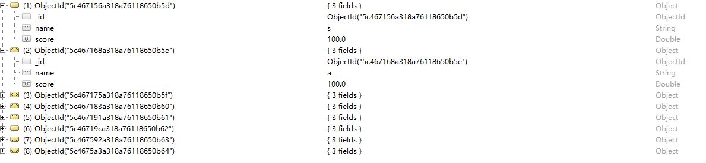
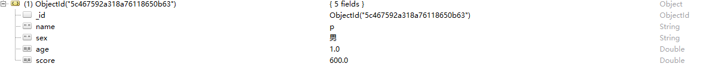
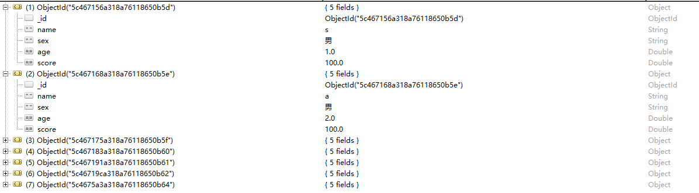
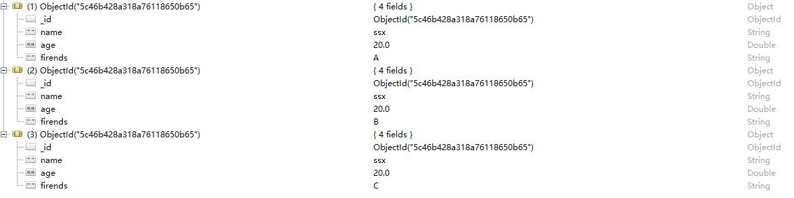
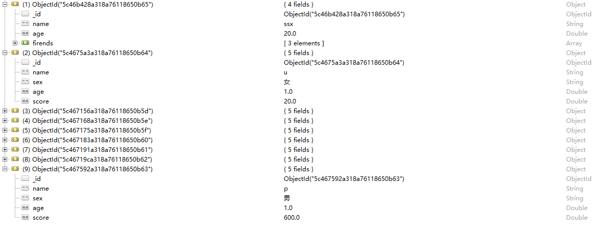

#mongodb管道
mongoDB的聚合框架模型建立在数据处理管道这一概念的基础之上。文档进入多阶段管道中，管道将文档转换为聚合结果。最基 本的管道阶段类似于查询过滤器和修改输出文档形式的文档转换器。
其他的管道为分组和排序提供一些工具，可通过指定一个或多个字段完成分组或排序；同时提供了聚合数组内容的工具，操作的 数组包括文档数组。另外，聚合阶段能够使用一些运算符，完成诸如计算均值或连接字符串之类的任务。
管道利用MongoDB本机的操作方法提供了有效的数据聚合操作，并且对于数据聚合来说采用本机的操作方法是首选的。
聚合管道支持在分片集合上执行操作。
数据还用之前聚合里面的这些
db.collection.save({“name”:”s”,”sex”:”男”,”age”:1,”score”:100})
db.collection.save({“name”:”a”,”sex”:”男”,”age”:2,”score”:100})
db.collection.save({“name”:”d”,”sex”:”女”,”age”:3,”score”:100})
db.collection.save({“name”:”g”,”sex”:”女”,”age”:1,”score”:100})
db.collection.save({“name”:”h”,”sex”:”男”,”age”:1,”score”:100})
db.collection.save({“name”:”k”,”sex”:”女”,”age”:1,”score”:100})
db.collection.save({“name”:”p”,”sex”:”男”,”age”:1,”score”:600})
db.collection.save({“name”:”u”,”sex”:”女”,”age”:1,”score”:20})
$project 对数据进行修改
db.collection.aggregate([{“$project”:{“name”:1,”score”:1}}])

$match 对数据进行过滤(如果是Number类型一定是数字不能是字符串)
db.collection.aggregate([{“$match”:{“score”:{“$gt”:100}}}])

$skip 对查询的数据跳过指定数量的文档，返回剩下数量的文档
首先查找scroe小于等于100的数据
db.collection.aggregate([{“$match”:{“score”:{“$lte”100}}}])

然后跳过前三条的数据返回剩下的
db.collection.aggregate([{“$match”:{“score”:{“$lte”100}}},{“$skip”:3}])
$limt 限制返回数据的条数
db.collection.aggregate([{“$match”:{“score”:{“$lte”:100}}},{“$limit”:3}])
$unwind 将数组里面中的每个值拆分为单独的文档
我们先在数据库里面插入下面的数据
db.collection.save({“name”:”ssx”,”age”:20,”firends”:[“A”,”B”,”C”]})
由于数据库有很多数据我们先找到我们方才插入的那一条 然后以firends分为单独的文档

$sort 可以根据任何字段（或者多个字段）进行排序，与在普通查询中的语法是相同的。如果要对大量的文档进行排序，强烈建议在管道的第一阶段进行排序，这时的排序操作可以使用索引。否则，排序过程就会比较慢，而且会占用大量内存。
1是升序，-1是降序
db.collection.find({}).sort({“score”:1})
